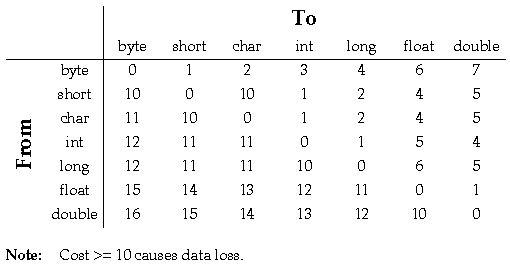

To make a new class, the programmer must base it on an existing class. The new class is said to be derived from the existing class. The derived class is also called a subclass of the other, which is known as a superclass. Class derivation is transitive: if B is a subclass of A, and C is a subclass of B, then C is a subclass of A.
The immediate superclass of a class and the interfaces (see Interfaces) that the class implements (if any) are indicated in the class declaration by the keywords extends and implements, respectively:
[Doc comment] [Modifiers] class Classname
extends Superclassname]
implements Interface{, Interface}] {
ClassBody
}
For example:
/** 2 dimensional point */
public class Point {
float x, y;
...
}
/** Printable point */
class PrintablePoint extends Points implements Printable {
...
public void print() {
...
}
}
All classes are derived from a single root class: Object. Every class except Object has exactly one immediate superclass. If a class is declared without specifying an immediate superclass, Object is assumed. For example, the following:
class Point {
float x, y;
}
is the same as:
class Point extends Object {
float x, y;
}
The language supports only single inheritance. Through a feature known as interfaces, it supports some features that in other languages are supported through multiple inheritance (see Interfaces).
(classname)ref
where (classname) is the object being cast to and ref is the object being cast.Casting affects only the reference to the object, not the object itself. However, access to instance variables is affected by the type of the object reference. Casting an object from one type to another may result in a different instance variable being accessed even though the same variable name is used.
class ClassA {
String name = "ClassA";
}
class ClassB extends ClassA { // ClassB is a subclass of ClassA
String name= "ClassB";
}
class AccessTest {
void test() {
ClassB b = new ClassB();
println(b.name); // print: ClassB
ClassA a;
a = (ClassA)b;
println(a.name); // print: ClassA
}
}
A method declaration in a class has the following form (native and abstract methods have no method body):
[Doc comment] [Modifiers] returnType methodName ( parameterList ) {
[methodBody]
}
Methods:
class Rectangle {
void vertex(int i, int j) {
for (int i = 0; i <= 100; i++) { // ERROR
...
}
}
}
the declaration of "i" in the for loop of the method body of "vertex" is a compile-time error.The language allows polymorphic method naming--declaring a method with a name that has already been used in the class or its superclass--for overriding and overloading methods. Overriding means providing a different implementation of an inherited method. Overloading means declaring a method that has the same name as another method, but a different parameter list.
Note: Return types are not used to distinguish methods. Within a class scope, methods that have the same name and parameter list, i.e., the same number, position, and types of parameters, must return the same type. It is a compile-time error to declare such a method with a different return type.
Instance variables can be of any type and can have initializers. If an instance variable does not have an initializer, it is initialized to zero; boolean variables are initialized to false; and objects are initialized to null. An example of an initializer for an instance variable named j is:
class A {
int j = 23;
...
}
class MyClass {
void aMethod(OtherClass obj) {
...
obj.Method(this);
...
}
}
Any time a method refers to its own instance variables or methods, an implicit "this." is in front of each reference:
class Foo {
int a, b, c;
...
void myPrint(){
print(a + "\n"); // a == "this.a"
}
...
}
The super variable is similar to the this variable. The this variable contains a reference to the current object; its type is the class containing the currently executing method. The super variable contains a reference which has the type of the superclass.
setThermostat(...) // refers to the overriding method
super.setThermostat(...) // refers to the overridden method
Methods may be overloaded by varying both the number and the type of arguments. The compiler determines which matching method has the lowest type conversion cost. Only methods with the same name and number of arguments are considered for matching. The cost of matching a method is the maximum cost of converting any one of its arguments. There are two types of arguments to consider:, object types and base types.
The cost of converting among object types is the number of links in the class tree between the actual parameter's class and the prototype parameter's class. Only widening conversions are considered. (See Casting Between Class Types for more information on object conversion.) No conversion is necessary for argument types that match exactly, making their cost 0.
The cost of converting base types is calculated from the table below. Exact matches cost 0.

Cost >= 10 causes data loss.
Once a conversion cost is assigned to each matching method, the compiler chooses the method which has the lowest conversion cost. If there is more than one potential method with the same lowest cost the match is ambiguous and a compile-time error occurs.
For example:
class A {
int method(Object o, Thread t);
int method(Thread t, Object o);
void g(Object o, Thread t) {
method(o, t); // calls the first method.
method(t, o); // calls the second method.
method(t, t); // ambiguous - compile-time error
}
}
Note: The names of parameters are not significant. Only the number, type, and order are.Constructors can be overloaded by varying the number and types of parameters, just as any other method can be overloaded.
class Foo {
int x;
float y;
Foo() {
x = 0;
y = 0.0;
}
Foo(int a) {
x = a;
y = 0.0;
}
Foo(float a) {
x = 0;
y = a;
}
Foo(int a, float b) {
x = a;
y = b;
}
static void myFoo() {
Foo obj1 = new Foo(); //calls Foo();
Foo obj2 = new Foo(4); //calls Foo(int a);
Foo obj3 = new Foo(4.0); //calls Foo(float a);
Foo obj4 = new Foo(4, 4.0); //calls Foo(int a, float b);
}
}
The instance variables of superclasses are initialized by calling either a constructor for the immediate superclass or a constructor for the current class. If neither is specified in the code, the superclass constructor that has no parameters is invoked. If a constructor calls another constructor in this class or a constructor in the immediate super class, that call must be the first thing in the constructor body. Instance variables can't be referenced before calling the constructor.Invoking a constructor of the immediate superclass is done as follows:
class MyClass extends OtherClass {
MyClass(someParameters) {
/* Call immediate superclass constructor */
super(otherParameters);
...
}
...
}
Invoking a constructor in the current class is done as follows:
class MyClass extends OtherClass {
MyClass(someParameters) {
...
}
MyClass(otherParameters) {
/* Call the constructor in this class that has the
specified parameter list. */
this(someParameters);
...
}
...
}
The Foo and FooSub methods below are examples of constructors.
class Foo extends Bar {
int a;
Foo(int a) {
// implicit call to Bar()
this.a = a;
}
Foo() {
this(42); // calls Foo(42) instead of Bar()
}
}
class FooSub extends Foo {
int b;
FooSub(int b) {
super(13); // calls Foo(13); without this line,
// would have called Foo()
this.b = b;
}
}
If a class declares no constructors, the compiler automatically generates one of the following form:
class MyClass extends OtherClass {
MyClass() { // automatically generated
super();
}
}
To allocate storage for an object, use the new operator. In addition to allocating storage, new initializes the instance variables and then calls the instance's constructor. The constructor is a method that initializes an object (see Constructors). The following syntax allocates and initializes a new instance of a class named ClassA:
a = new ClassA();
This constructor syntax provides arguments to the constructor:
b = new ClassA(3,2);A third form of allocator allows the class name to be provided as a String expression. The String is evaluated at runtime, and new returns an object of type Object, which must be cast to the desired type.
b = new ( "Class"+"A" );In this case, the constructor without arguments is called.
Static variables can have initializers, just as instance variables can. See Order of Initialization for more information. A static variable exists only once per class, no matter how many instances of the class exist. Both static variables and static methods are accessed using the class name. For convenience, they can also be accessed using an instance of the class.
class Ahem {
int i; // Instance variable
static int j; // Static variable
static int arr[] = new int[12];
static { // static initializer:
// initialize the array
for (int i = 0; i < arr.length; i++) {
arr[i] = i;
}
}
void seti(int i) { // Instance method
this.i = i;
}
static void setj(int j) { // Static method
Ahem.j = j;
}
static void clearThroat() {
Ahem a = new Ahem();
Ahem.j = 2; // valid; static var via class
a.j = 3; // valid; static var via instance
Ahem.setj(2); // valid; static method via class
a.setj(3); // valid; static method via instance
a.i = 4; // valid; instance var via instance
Ahem.i = 5; // ERROR; instance var via class
a.seti(4); // valid; instance method via instance
Ahem.seti(5); // ERROR; instance method via class
}
}
class A {
void a() {
f.set(42);
}
B f;
}
class B {
void set(long n) {
this.n = n; }
long n;
}
class C {
static int a = 1;
static {
a++;
b = 7;
}
static int b = 2;
}
When class C is loaded, the following occurs in order:
For example, if ClassA is loaded, its static initialization code is executed. However, ClassA's static initialization code can have a reference to another unloaded class, for example, ClassB. In that case, ClassB is loaded and its static initialization occurs before ClassA's. Then, ClassA's static initializations are executed. A cycle is created if ClassB has a reference to ClassA in its static initialization code.
It is an compile-time error for instance or static variable initializations to have a forward dependency. For example, the following code:
int i = j + 2;
int j = 4;
results in a compile-time error.An instance variable's initialization can have an apparent forward dependency on a static variable. For example in the following code fragment:
int i = j + 2; // Instance variable
static int j = 4; // Static variable
it appears that i has a forward dependency on j. However, i is initialized to 6 and j is initialized to 4. This initialization occurs because j is a static variable and is initalized before the instance variable. Thus, j is initialized to 4 before i is initialized.Static methods cannot refer to instance variables; they can only use static variables and static methods.
Public access can be applied to classes, methods, and variables. Classes, methods, and variables marked as public can be accessed from anywhere by any other class or method. The access of a public method cannot be changed by overriding it.
Classes, methods, and variables that do not have either private or public access specified can be accessed only from within the package where they are declared (see Packages).
Using final lets the compiler perform a variety of optimizations. One such optimization is inline expansion of method bodies, which may be done for small, final methods (where the meaning of small is implementation dependent).
Examples of the various final declarations are:
class Foo {
final int value = 3; // final variable
final int foo(int a, int b) { // final method
...
}
}
native long timeOfDay();
The following rules apply to the use of the abstract keyword:
When a synchronized method is invoked, it waits until it can acquire the lock for the current instance (or class, if it's a static method). After acquiring the lock, it executes its code and then releases the lock.
Synchronized blocks of code behave similarly to synchronized methods. The difference is that instead of using the lock for the current instance or class, they use the lock associated with the object or class specified in the block's synchronized statement.
Synchronized blocks are declared as follows:
/* ...preceding code in the method... */
synchronized(<object or class name>) { //sync. block
/* code that requires synchronized access */
}
/* ...remaining code in the method... */
An example of the declaration of a synchronized method is:
class Point {
float x, y;
synchronized void scale(float f) {
x *= f;
y *= f;
}
}
An example of a synchronized block is:
class Rectangle {
Point topLeft;
...
void print() {
synchronized (topLeft) {
println("topLeft.x = " + topLeft.x);
println("topLeft.y = " + topLeft.y);
}
...
}
}
The Java Language Specification
Generated with CERN WebMaker